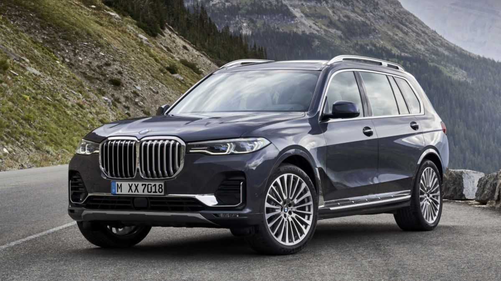
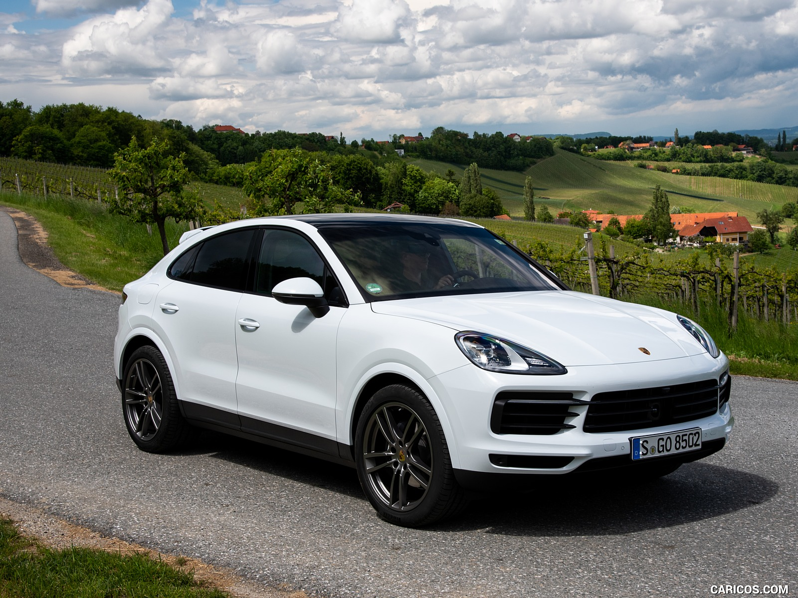

BMW X5 |
|
|---|---|
|  More images |
The BMW X5 is a mid-size crossover from the German automaker BMW. The car was unveiled at the 1999 Detroit Auto Show. The “X” means that the car has four-wheel drive, and the number “5” means that the base was the 5th series, but the X5 is shorter than the E39, but at the same time taller and wider. The body of the E53 is reminiscent of the BMW E46 Touring. The car is adapted for driving on all types of road surface, it owes this to the high ground clearance and constant all-wheel drive. |
Porsche Cayenne |
|
|---|---|
|  More images |
The Porsche Cayenne is a five-seat mid-size sports crossover manufactured by the German car manufacturer Porsche. The car was created with the active participation of the Volkswagen concern. Production of the first generation (Type 955 / 9PA) began in 2002, sales in North America began in 2003. The model's name, Cayenne, is derived from the capital of French Guiana. |